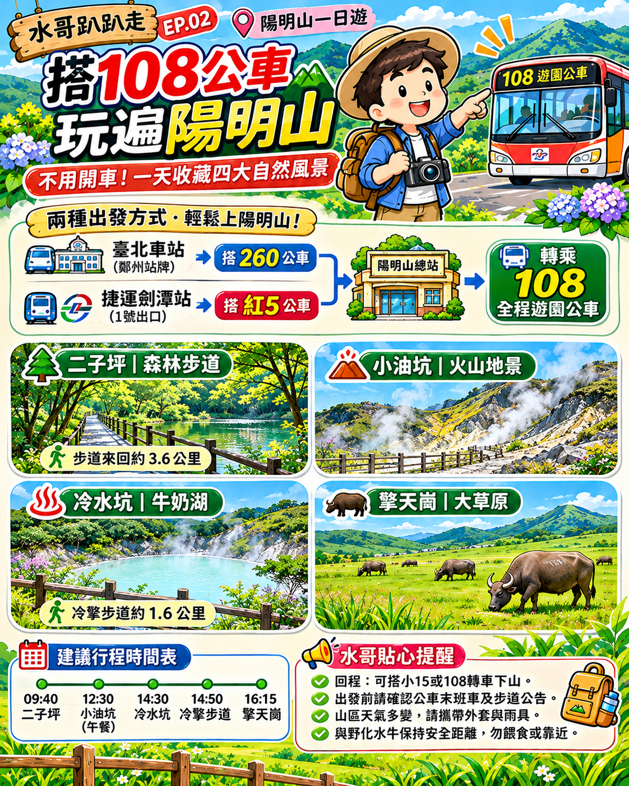

公車旅行・森林健行｜陽明山 EP.02
陽明山一日遊｜搭108遊園公車探索四大自然景點
臺北車站搭260、劍潭站搭紅5，轉108全程車，走訪二子坪、小油坑、冷水坑與擎天崗，附行程及回程交通。
更新：2026/11/27｜建議行程，非實際遊記

插畫為旅遊意象，時間表僅供規劃。
🚌 兩種出發方式
108區間車只到二子坪折返；請確認車頭標示及行車方向。冷水坑與冷水坑服務站是不同站牌。各次搭乘依公車票價規定計費。
108公車動態🌿 四大自然景點
01 二子坪｜森林與生態池
林蔭步道坡度平緩，單程約1.8公里、往返約3.6公里。預留約2小時，原路返回公車站。
02 小油坑｜火山地景
觀賞噴氣孔、硫磺結晶與裸露岩壁，勿跨越護欄。可在適當休憩區享用自備素食飯糰、水果及飲水。
03 冷水坑｜牛奶湖與菁山吊橋
從觀景平台欣賞湖色，依開放情況走訪吊橋。冷擎步道約1.6公里，往擎天崗方向有上坡，預留一小時以上。雨霧或體力不足改搭公車。
04 擎天崗｜草原與遠山
欣賞遼闊草原與季節芒花，勿餵食、觸摸或接近野化水牛；遵守圍欄及現場安全規定。
🕓 建議時間表
| 時間 | 行程 |
|---|---|
| 08:00 | 臺北車站或劍潭站出發 |
| 09:00 | 陽明山總站轉108 |
| 09:40 | 二子坪森林步道 |
| 12:30 | 小油坑、午餐 |
| 14:30 | 冷水坑 |
| 14:50 | 冷擎步道（視情況） |
| 16:15 | 擎天崗（視班次及天候） |
| 16:40 | 參考下山時間，須先確認末班車 |
非公車時刻表。候車或步行較久時，建議改為二子坪＋小油坑，或冷水坑＋擎天崗半日遊；優先確保下山交通。
🚌 回程交通
擎天崗 → 小15全程車 → 劍潭站；或108全程車 → 陽明山總站 → 260回臺北車站／紅5回劍潭站。注意方向及當日末班車。
小15動態🎒 水哥貼心提醒
防滑鞋、飲水、素食行動糧、防風外套及雨具。山區天氣多變，出發前查詢步道、道路與公車公告。
本篇為個人旅遊規劃，交通與景點以主管機關公告為準。
💚 水哥旅行小語
一座陽明山，四種自然風景。不必把行程排得滿滿，只要跟著山風慢慢走，就能把生活的疲憊留在山下。